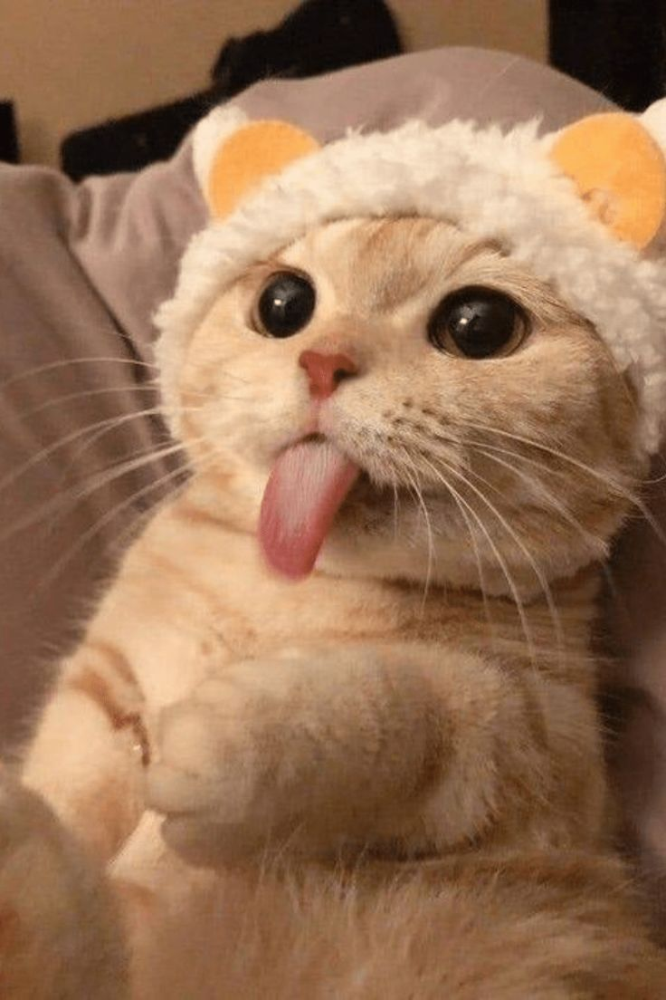

Nuestros Bigotes en Busca de Hogar




En BigotesEnCasa nos dedicamos a encontrar hogares amorosos para gatos que necesitan una segunda oportunidad. Todos nuestros gatos están esterilizados, vacunados y desparasitados.
¿Tienes preguntas sobre nuestros gatos o el proceso de adopción?
¡No dudes en contactarnos a través de nuestras redes sociales!